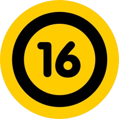
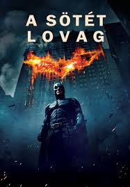

 2008 Warner Bros. Entertainment Inc.
A Batman kezdődik eseményei után egy évvel játszódó történetben Batman, James Gordon hadnagy és az új kerületi ügyész, Harvey Dent sikeresen megkezdi a Gotham Cityt sújtó bűnözők elfogását, mígnem egy titokzatos és szadista bűnözőzseni, akit csak "Jokerként" ismernek, megjelenik Gothamben, és újabb káoszhullámot kelt. Batman küzdelme a Jokerrel mélyen személyessé válik, arra kényszerítve őt, hogy "szembeszálljon mindennel, amiben hisz", és fejlessze a technológiáját, hogy megállítsa őt.